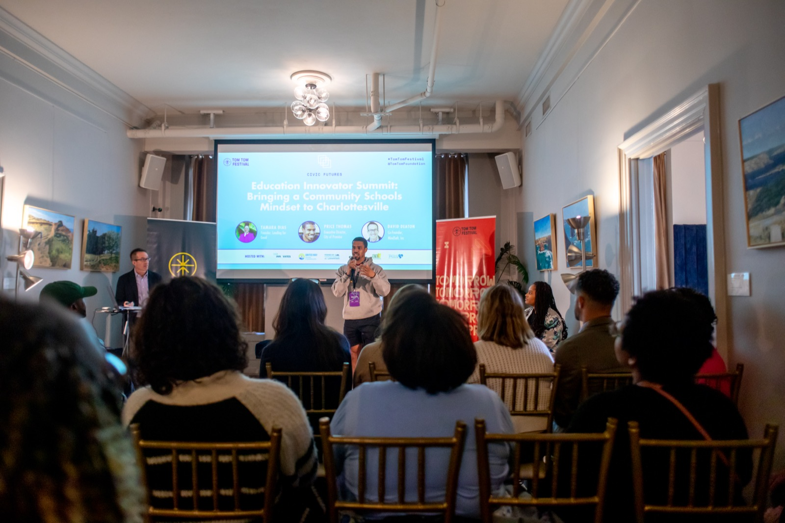
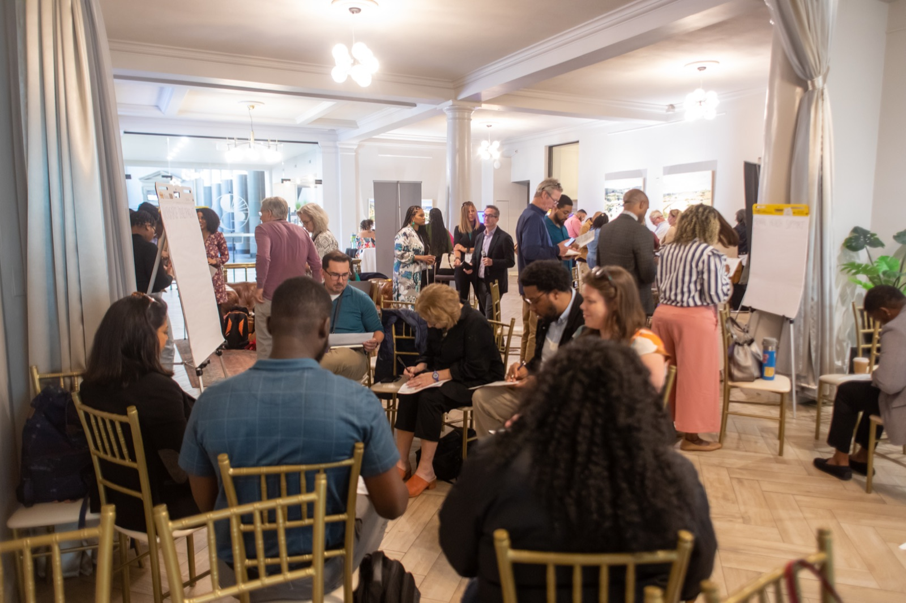
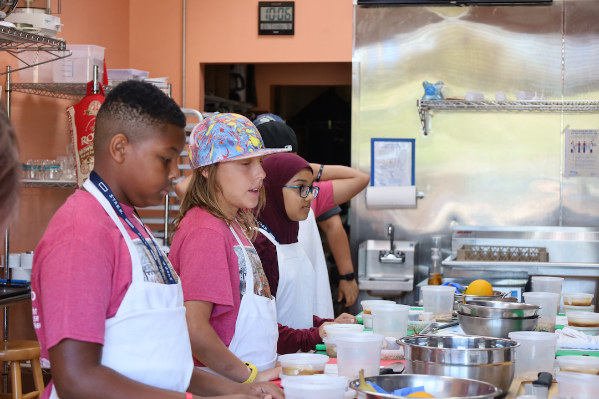
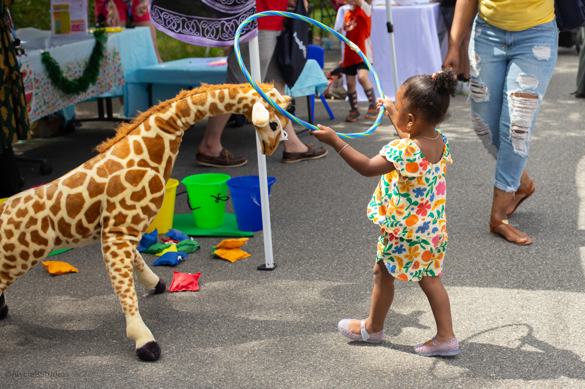

Pathways to Family Success aligns academic, behavioral health, and family supports into a single coordinated model, anchored at the school.

School-aged students in Charlottesville face persistent and widening disparities, particularly in early literacy and attendance. Despite spending the second most in the state per, student, we experience a 48-point gap in literacy proficiency between Black and white students. At Trailblazer Elementary specifically, only 30% of Black students meet reading benchmarks, compared to 89% of white students. Across the division, more than 30% of Black students are chronically absent.
These gaps compound. Children who are not reading at grade level by third grade are more likely to struggle for the rest of their schooling. Chronic absenteeism in early grades predicts lower academic outcomes years later.
Roughly 27% of city families can't meet basic needs, and most are working full-time. In the 10th & Page neighborhood, that figure climbs to 65%. Family instability shows up in the classroom before it shows up anywhere else.
Charlottesville has the nonprofit resources to address this. What's missing is alignment. Each agency runs its own intake, its own waitlist, its own definition of progress. Families end up doing the integration work themselves, and existing supports go underused because the path to them is fragmented.
Schools cannot solve these challenges alone, but they are central to the solution. PFS is built around that reality.

Education is a social issue. Schools cannot solve it alone, but they are central to the solution.From the PFS pilot proposal to Charlottesville City Schools
PFS aligns academic, behavioral health, and family supports into a single coordinated model, anchored at the school. Tutoring, enrichment, mental health services, workforce pathways, and early childhood connections operate as one continuum, not five separate programs.
Intake happens through trusted partner organizations or school referrals. From there, the partner who already knows the family routes them to the next service, without making them retell their story to each agency.
A shared data infrastructure, built on SmartSheets and the Network2Work platform, lets partners coordinate across services, follow every referral through to its outcome, and track impact together, so families aren't handed off and lost between agencies. Data sharing is consent-based, with privacy and ethical use as defaults.
The goal is straightforward: reduce duplication, improve coordination, and make sure families receive the support that already exists.
Literacy-focused, small group. Aligned with classroom instruction and student need.
Arts and music, STEM and hands-on learning, physical activity and wellness, social-emotional learning.
Alongside the afterschool program, PFS extends support to the whole family. Behavioral health services are available to students and caregivers. Parents have access to workforce and economic mobility pathways through Network2Work@PVCC. Younger siblings are connected to early childhood resources.
The pilot is designed to minimize burden on Charlottesville City Schools. Coalition partners lead implementation and coordination. There is no requirement for CCS to hire additional staff, contribute funding, or take on program operations. Estimated pilot cost of approximately $500,000 is funded through coalition fundraising.
Spring–Summer 2026. CCS partnership approval. Final planning, staffing, and partner coordination ahead of launch.

Fall 2026. Program begins at Trailblazer Elementary, serving up to 50 students K–5.

2026–2027 school year. Continued program operations with quarterly evaluation and reporting from Virginia Center for Community Partnerships.
This pilot runs on community support. Gifts through United Way, the coalition's fiscal backbone, go straight to funding the coordinated model at Trailblazer Elementary.